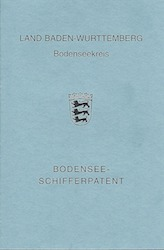
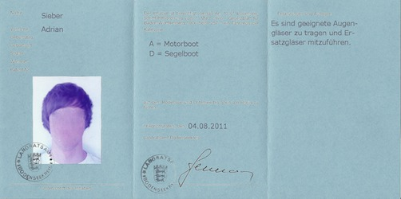

Das Bodenseeschifferpatent
 
Wer benötigt das Schifferpatent?
Jeder der mit einem Boot mit mehr als 12m2 Segelfläche oder 4,4 kW Motorleistung auf dem Bodensee fahren möchte.
| Kategorie A | Patent für Motorboote über 4,4 kW. Mindestalter 18 Jahre. Ab einem Alter von 21 Jahren darf man auch Fahrgastschiffe führen, die für maximal 12 Fahrgäste zugelassen sind. |
| Kategorie B | Patent für Fahrgastschiffe die für mehr als 12 Fahrgäste zugelassen sind. |
| Kategorie C | Patent für Güterschiffe. |
| Kategorie D | Patent für Segelboote mit mehr als 12m2 Segelfläche. Mindestalter 14 Jahre. Für Segelboote mit mehr als 4,4 kW Motorleistung werden das Patent der Kategorie D und der Kategorie A benötigt. |
Wie bekommt man das Schifferpatent?
Man muss sowohl eine theoretische, als auch eine praktische Prüfung bei dem Prüfungsauschusses des zuständigen Landratsamtes ablegen. Die Zulassung zur Prüfung wird mit diesem Formular beim Landratsamt beantragt. Dem Antrag muss folgendes beigefügt werden:
- Ein Lichtbild (38 mm x 45 mm)
- Dieses amtsärztliche oder ärztliche Zeugnis (Seh-, Hör-, Farbuntescheidungsvermögen)
- Ein Führungszeugnis (nur auf Verlangen)
Unter welchen Umständen darf das Patent wieder entzogen werden?
- Wenn der Schiffsführer seine Pflichten als Schiffsführer "erheblich verletzt" hat.
- Wenn er ein Boot stark alkoholisiert oder unter Einwirkung anderer Rauschmittel geführt hat.
Was muss man bei einem Umzug beachten?
Bei einem Umzug in einen anderen Bodenseestaat als den, der das Schifferpatent ausgestellt hat, muss es aktualisiert werden, da ansonsten die Gültigkeit verfällt.
Beinhaltet das Bodenseeschifferpatent den Sportbootführerschein Binnen?
Ja, das Bodenseeschifferpatent kann ohne zusätzliche Prüfung mit
diesem Formular
in den Sportbootführerschein Binnen umgeschrieben werden.
Zuständig hierfür ist der Deutsche Seglerverband (DSV)
bzw. der Deutsche Motoryacht Verband (DMYV).
Außerdem befreit die Zusatzprüfung "Navigation" in der Kategorie A (Motor) von der
praktischen Prüfung für den amtlichen Sportbootführerschein See.
Ist ein Boot Zulassungs- und Registrierungspflichtig?
Motorboote und Segelboote, die mit einer Wohn-, Koch- oder sanitären Einrichtung ausgestattet sind benötigen eine amtliche Zulassung. Boote die nicht zulassungspflichtig sind aber länger als 2.50 m (ausgeschlossen Surfbretter, Paddel- und Rennruderboote) müssen registriert werden und erhalten einen Bootsausweis. Sie muss beim zuständigen Landratsamt mit diesem Formular beantragt werden. Dabei wird das Boot auf technische Mängel überprüft. Die Zulassung kann an bestimmte Auflagen gebunden sein und erlischt nach 3 Jahren, so dass eine Nachuntersuchung beantragt werden muss.
Nicht zugelassen sind:
- Motoren, die die vorgegebenen Grenzwerte (Kohlenmonoxid-, Kohlenwasserstoff- und Stickstoffoxidemissionen) der BSO-Stufen 1 oder 2 oder der EU Sportbootrichtlinien überschreiten.
- Motoren, die lauter als maximal 72 dB(A) in 25 m seitlichem Abstand sind.
In folgenden Fällen muss das Landratsamt benachrichtigt werden:
- Bei einem Eigentümerwechsel innerhalb von 2 Wochen
- Bei einem Standortwechsel des Bootes oder des Eigentümers innerhalb von 2 Monaten.
- Wenn das Boot in Zukunft nicht mehr auf dem Bodensee genutzt werden soll, ist die Zulassungsurkunde zurückzugeben.
Muss man sein Boot kennzeichnen?
Jedes zulassungs- und regisrierungspflichtige Boot erhält vom Landratsamt ein Kennzeichen. Alle anderes Wasserfahrzeuge sind mit Namen und Adresse des Besitzers zu versehen. Das Kennzeichen muss gut sichtbar und mindestens 8cm hoch sein.